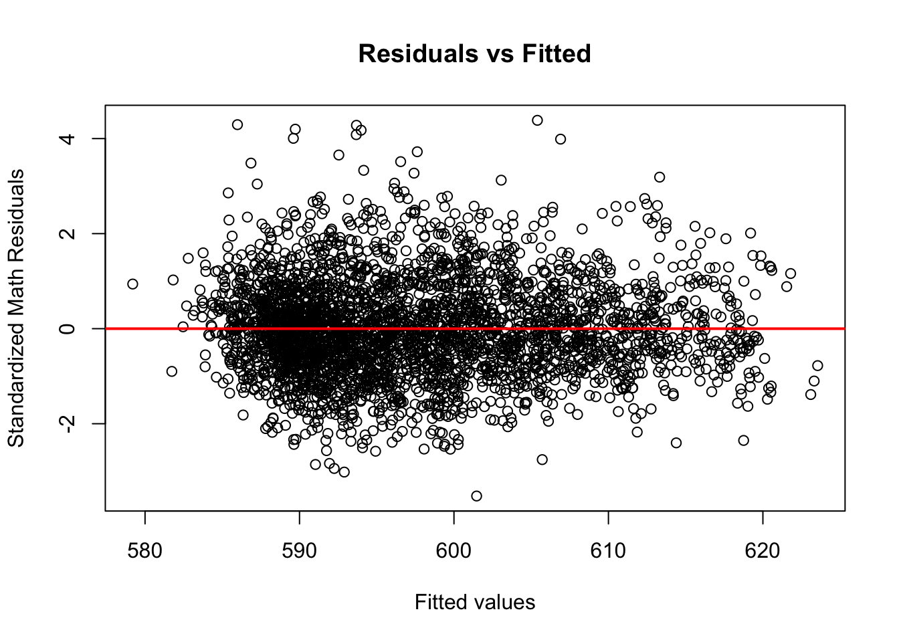

Chapter 4 Results
4.1 Analyzing standardized test scores
In order to investigate the larger question of how student demographics impact test scores, we need to take analyze the test scores themselves.
4.1.1 Descriptive Statistics
First, we’ll start off by looking at a few descriptive statistics to see what they tell us about the Math and ELA test scores. The tables below contain basic descriptive statistics for each exam over the years. Each data point is the mean test score at a given school from grades 3-8 for the respective exam.
| 2018 | 2019 | 2022 | |
|---|---|---|---|
| min | 577.72 | 571.50 | 572.00 |
| max | 635.59 | 634.35 | 629.95 |
| median | 596.30 | 597.82 | 592.87 |
| var | 109.72 | 106.93 | 125.50 |
| skewness | 0.62 | 0.52 | 0.50 |
| Shapiro-Wilk p value | 0.00 | 0.00 | 0.00 |
Here are a few notes about this table:
The p-value for our Shapiro-Wilk normality test is approximately 0 each year. This means that we have significant evidence to reject the null-hypothesis that our data is normally distributed. Since our scores are not normal in any year, we must keep this in mind for any analyses/visualizations done with this data.
2022 was an interesting year because it had the lowest max and median, yet it still had the highest variance. This might suggest that scores were lower than previous years, yet more spread out. The skewness was also lowest closest to 0 in 2022, which suggests our scores were more symmetrical than in previous years.
Skewness values above 0.5 in 2018 and 2019 means the data was slightly positively skewed in those years. In other words, the scores were slightly more concentrated at the higher end of the scale in these years.
| 2018 | 2019 | 2022 | |
|---|---|---|---|
| min | 570.58 | 559.30 | 570.30 |
| max | 631.72 | 634.06 | 630.56 |
| median | 598.87 | 598.15 | 599.02 |
| var | 88.99 | 91.94 | 93.77 |
| skewness | 0.57 | 0.49 | 0.36 |
| Shapiro-Wilk p value | 0.00 | 0.00 | 0.00 |
Looking at the table for our ELA scores, here are a few more takeaways:
- Again, p-value for our Shapiro-Wilk normality test is approximately 0 each year. This means our ELA scores are also not normal in any year.
- The data follows a similar trend to Math scores in that 2022 had the highest variance and lowest skew of the years observed.
- The variances among ELA scores was comparatively lower than the corresponding variances for Math scores each year, though they followed similar trends over the years. The same is true for skewness. This means the scores for ELA were relatively less spread out and more symmetrical.
4.1.2 Reading vs. Math Scatterplot
In investigating the relationship between Reading and Math scores, we started with the big picture question: is there a correlation between success on Math & success on ELA? We chose to break this down at the school level, because there is more data for us to work with compared to scores at the district level.
The graphs above are three scatterplots of reading vs math test scores, separated based on the year the test was taken. The first main takeaway here is that there seems to be a strong positive correlation between reading and math scores in all three years, as one might expect. In other words, schools that performed well in math usually did well on reading too, and vice-versa. There were a few outliers each year, where some schools did noticeably better on math than on reading. There were also a few, less noticeable, schools who performed slightly better on ELA than on math.
The second big takeaway from these scatterplots is that math scores were noticeably lower in 2022 than in years prior. There is also more variance in scores in 2022, which is demonstrated by higher variance of our scatterplot than in the other two years. We can likely attribute this to the onset of the Covid-19 global pandemic, which abruptly forced students to adapt to online learning for anywhere between six months to an entire school year.
4.1.3 Correlation Analysis
Now that we have examined the linear relationship between Math and ELA scores graphically, let’s see if we can find any more information by doing so analytically.
We will use the Spearman’s correlation to examine the strength of the linear relationship between scores in each year since they are not normally distributed. The data meets the assumptions for calculating Spearman’s correlation coefficient because test scores each year are on an interval scale, they represent paired observations, and they have a monotonic relationship (as shown above). This is what we get:
| 2018 | 2019 | 2022 | |
|---|---|---|---|
| Spearman correlation coefficient | 0.937 | 0.941 | 0.922 |
Looking at this table, we can see that the linear relationship between scores on the two exams is fairly strong, as expected. Furthermore, the correlation coefficient was slightly lower in 2022 as we saw from our scatterplot. Generally speaking, we know that a relatively high achieving Math school also did well on ELA (and vice-versa). However, this leads us to wonder is there a difference between Math and ELA scores over the years?
4.1.4 Density Histogram of Test Scores
Again, we will start with a visualization to investigate the question of which exam students actually performed better on, over the years. Again, we are looking at this data on the school level because there is more data to work with, and thus, more nuance to be uncovered.

Looking at our density histograms, we can see that there is a lot of overlap between scores in both subjects in this three year sample size. At first glance, the relatively higher concentration of ELA scores from 600 onwards suggests that student’s performed slightly better on ELA than Math each year. This is particularly true in 2022 where scores on the exams are most distinguishable.
4.1.5 Confidence Intervals
We can utilize the Wilcox Test to estimate the difference between median Math and ELA scores and determine the significance of said difference. We cannot use the traditional paired t-test because our data is not normal. The following table contains a 99% confidence interval for the difference between median scores in each year, in addition to the p-value for the corresponding test. Our null-hypothesis is that the two sample means are equal (or that the test scores for ELA and Math are the same).
| Lower boundary | Upper boundary | Wilcox test p-value | |
|---|---|---|---|
| 2018 | -2.33 | -1.94 | 0 |
| 2019 | -0.58 | -0.18 | 0 |
| 2022 | -5.67 | -5.16 | 0 |
Looking at the result of our test for each year reveals: \[p \approx 0 < 0.01\] Thus, we can reject the null hypothesis that our two sample means are the same, even at the 1% level of significance! Therefore, we have evidence of a statistically significant difference between the median Math & ELA scores in each year observed.
It is notable that the 99% confidence interval for 2022, (-5.67, -5.16), is much larger than other years. This means we are 99% confident that the true median difference between Math and ELA scores at a given school in 2022 is between -5.67 and -5.16. In the context of standardized testing, this difference in scores is relatively small each year– however, it is important for our analyses that Math scores are consistently lower than ELA scores, and that this difference is statistically significant each year despite the negligible difference in some years.
4.1.6 Main Takeaways
In summary, we know schools that performed relatively well on one exam were also successful on the other. This conclusion is fairly intuitive, though it was still important to analyze the data before assuming so. Furthermore, there is evidence to suggest schools performed better on ELA than Math each year, though this difference was quite small in some years. This is interesting because the linear relationship between scores is very strong, yet there is still a statistically significant difference between scores. Lastly, every test, table, and visualization revealed that 2022 was a fairly odd year. This is likely related to the break from standardized testing due to the onset of the Covid-19 global pandemic. The virus’s impact on education will be seen for many years to come and extends far beyond the analysis of standardized test scores done as part of this project.
4.2 Analyzing student demographics
Let’s analyze the student demographic data now that we have a clear understanding of standardized test scores. As a reminder, we are only focused on students from grades 3-8.
4.2.3 Descriptive statistics & Diversity scores
((Diversity Index) [https://geographyfieldwork.com/Simpson’sDiversityIndex.htm#:~:text=Simpson’s%20Diversity%20Index%20is%20a,evenness%20increase%2C%20so%20diversity%20increases.&text=The%20value%20of%20D%20ranges%20between%200%20and%201.] )
| District | Asian | Black | Hispanic | White | ELL | SWD | Poverty | ENI | Diversity |
|---|---|---|---|---|---|---|---|---|---|
| 1 | 0.21 | 0.15 | 0.42 | 0.18 | 0.08 | 0.22 | 0.64 | 0.66 | 0.73 |
| 2 | 0.22 | 0.14 | 0.33 | 0.26 | 0.08 | 0.18 | 0.54 | 0.53 | 0.76 |
| 3 | 0.09 | 0.21 | 0.32 | 0.32 | 0.05 | 0.18 | 0.49 | 0.49 | 0.74 |
| 4 | 0.09 | 0.24 | 0.60 | 0.05 | 0.10 | 0.24 | 0.82 | 0.82 | 0.58 |
| 5 | 0.04 | 0.48 | 0.39 | 0.06 | 0.08 | 0.24 | 0.82 | 0.83 | 0.61 |
| 6 | 0.01 | 0.07 | 0.84 | 0.06 | 0.27 | 0.21 | 0.84 | 0.83 | 0.29 |
| 7 | 0.01 | 0.27 | 0.69 | 0.02 | 0.16 | 0.24 | 0.92 | 0.92 | 0.45 |
| 8 | 0.06 | 0.21 | 0.65 | 0.06 | 0.14 | 0.24 | 0.83 | 0.83 | 0.53 |
| 9 | 0.01 | 0.27 | 0.69 | 0.01 | 0.22 | 0.23 | 0.92 | 0.93 | 0.45 |
| 10 | 0.08 | 0.15 | 0.69 | 0.06 | 0.21 | 0.20 | 0.83 | 0.83 | 0.49 |
| 11 | 0.09 | 0.38 | 0.43 | 0.09 | 0.12 | 0.20 | 0.79 | 0.77 | 0.66 |
| 12 | 0.03 | 0.24 | 0.70 | 0.01 | 0.21 | 0.23 | 0.92 | 0.92 | 0.45 |
| 13 | 0.21 | 0.41 | 0.17 | 0.17 | 0.04 | 0.14 | 0.64 | 0.61 | 0.73 |
| 14 | 0.05 | 0.20 | 0.56 | 0.16 | 0.11 | 0.21 | 0.72 | 0.75 | 0.62 |
| 15 | 0.16 | 0.13 | 0.36 | 0.30 | 0.14 | 0.20 | 0.56 | 0.57 | 0.73 |
| 16 | 0.02 | 0.72 | 0.20 | 0.03 | 0.05 | 0.25 | 0.84 | 0.84 | 0.44 |
| 17 | 0.03 | 0.73 | 0.16 | 0.05 | 0.10 | 0.19 | 0.80 | 0.76 | 0.43 |
| 18 | 0.02 | 0.84 | 0.08 | 0.04 | 0.07 | 0.20 | 0.77 | 0.71 | 0.29 |
| 19 | 0.08 | 0.43 | 0.45 | 0.02 | 0.14 | 0.21 | 0.87 | 0.86 | 0.61 |
| 20 | 0.44 | 0.03 | 0.27 | 0.26 | 0.22 | 0.16 | 0.76 | 0.75 | 0.67 |
| 21 | 0.26 | 0.13 | 0.25 | 0.34 | 0.17 | 0.18 | 0.72 | 0.73 | 0.74 |
| 22 | 0.21 | 0.28 | 0.15 | 0.33 | 0.12 | 0.17 | 0.70 | 0.64 | 0.74 |
| 23 | 0.01 | 0.74 | 0.22 | 0.01 | 0.05 | 0.25 | 0.90 | 0.89 | 0.41 |
| 24 | 0.20 | 0.02 | 0.63 | 0.13 | 0.23 | 0.17 | 0.76 | 0.72 | 0.54 |
| 25 | 0.49 | 0.07 | 0.30 | 0.12 | 0.19 | 0.14 | 0.69 | 0.63 | 0.65 |
| 26 | 0.53 | 0.11 | 0.18 | 0.15 | 0.08 | 0.15 | 0.58 | 0.47 | 0.65 |
| 27 | 0.22 | 0.22 | 0.40 | 0.10 | 0.11 | 0.18 | 0.76 | 0.69 | 0.73 |
| 28 | 0.30 | 0.20 | 0.28 | 0.16 | 0.11 | 0.15 | 0.68 | 0.61 | 0.76 |
| 29 | 0.17 | 0.60 | 0.17 | 0.02 | 0.09 | 0.16 | 0.73 | 0.63 | 0.59 |
| 30 | 0.21 | 0.06 | 0.53 | 0.17 | 0.17 | 0.15 | 0.70 | 0.68 | 0.64 |
| 31 | 0.12 | 0.12 | 0.29 | 0.44 | 0.07 | 0.24 | 0.58 | 0.53 | 0.69 |
| 32 | 0.02 | 0.16 | 0.78 | 0.02 | 0.21 | 0.20 | 0.87 | 0.86 | 0.36 |
4.3 Regression Analysis
Need to explain which variables I am getting rid of and justify them
4.3.1 Linear Regression (English)
##
## Call:
## lm(formula = `Mean Scale Score_e` ~ `% Poverty` + `% ELL` + `% SWD` +
## ENI + Diversity + `Total Enrollment`, data = lm_school)
##
## Residuals:
## Min 1Q Median 3Q Max
## -28.0438 -3.6377 -0.3087 3.3546 27.5852
##
## Coefficients:
## Estimate Std. Error t value Pr(>|t|)
## (Intercept) 623.480607 0.679799 917.154 < 2e-16 ***
## `% Poverty` -8.079934 1.582318 -5.106 3.47e-07 ***
## `% ELL` -7.328704 0.983316 -7.453 1.16e-13 ***
## `% SWD` -24.488914 1.735682 -14.109 < 2e-16 ***
## ENI -19.955934 1.620488 -12.315 < 2e-16 ***
## Diversity 3.484943 0.679004 5.132 3.02e-07 ***
## `Total Enrollment` 0.003010 0.000325 9.262 < 2e-16 ***
## ---
## Signif. codes: 0 '***' 0.001 '**' 0.01 '*' 0.05 '.' 0.1 ' ' 1
##
## Residual standard error: 5.555 on 3321 degrees of freedom
## Multiple R-squared: 0.664, Adjusted R-squared: 0.6634
## F-statistic: 1094 on 6 and 3321 DF, p-value: < 2.2e-16

##
## studentized Breusch-Pagan test
##
## data: english_reg
## BP = 183.21, df = 6, p-value < 2.2e-16##
## Shapiro-Wilk normality test
##
## data: standardized_eng_residuals
## W = 0.98664, p-value < 2.2e-16
4.3.2 Linear Regression (Math scores)
##
## Call:
## lm(formula = `Mean Scale Score_m` ~ `% Poverty` + `% ELL` + `% SWD` +
## ENI + Diversity + `Total Enrollment`, data = lm_school)
##
## Residuals:
## Min 1Q Median 3Q Max
## -23.9418 -4.4782 -0.4489 4.0343 30.1837
##
## Coefficients:
## Estimate Std. Error t value Pr(>|t|)
## (Intercept) 6.218e+02 8.432e-01 737.381 < 2e-16 ***
## `% Poverty` -7.348e+00 1.963e+00 -3.744 0.000184 ***
## `% ELL` 3.245e+00 1.220e+00 2.660 0.007843 **
## `% SWD` -2.853e+01 2.153e+00 -13.252 < 2e-16 ***
## ENI -2.410e+01 2.010e+00 -11.989 < 2e-16 ***
## Diversity 3.193e+00 8.422e-01 3.791 0.000152 ***
## `Total Enrollment` 4.822e-03 4.031e-04 11.962 < 2e-16 ***
## ---
## Signif. codes: 0 '***' 0.001 '**' 0.01 '*' 0.05 '.' 0.1 ' ' 1
##
## Residual standard error: 6.89 on 3321 degrees of freedom
## Multiple R-squared: 0.5999, Adjusted R-squared: 0.5992
## F-statistic: 829.9 on 6 and 3321 DF, p-value: < 2.2e-16

##
## studentized Breusch-Pagan test
##
## data: math_reg
## BP = 105.37, df = 6, p-value < 2.2e-16##
## Shapiro-Wilk normality test
##
## data: standardized_math_residuals
## W = 0.98865, p-value = 1.116e-15** Both linear models failed the homoscedasticity (constant variance) and normality assumptions for the standardized residuals. This means we cannot reliably interpret the results from either linear regression model. Next, we will try a Generalized Linear Model (GLM) with a Gamma link function. A Gamma link makes sense here because they are usually used when working with non-negative, continuous, and positive-skewed data.
4.3.3 GLM (English)
##
## Call:
## glm(formula = `Mean Scale Score_e` ~ `% Poverty` + `% ELL` +
## `% SWD` + ENI + Diversity + `Total Enrollment`, family = Gamma(link = log),
## data = lm_school)
##
## Deviance Residuals:
## Min 1Q Median 3Q Max
## -0.048598 -0.006068 -0.000544 0.005573 0.045669
##
## Coefficients:
## Estimate Std. Error t value Pr(>|t|)
## (Intercept) 6.436e+00 1.134e-03 5676.185 < 2e-16 ***
## `% Poverty` -1.291e-02 2.639e-03 -4.891 1.05e-06 ***
## `% ELL` -1.233e-02 1.640e-03 -7.516 7.23e-14 ***
## `% SWD` -4.071e-02 2.895e-03 -14.063 < 2e-16 ***
## ENI -3.344e-02 2.703e-03 -12.372 < 2e-16 ***
## Diversity 5.860e-03 1.132e-03 5.175 2.42e-07 ***
## `Total Enrollment` 5.054e-06 5.421e-07 9.324 < 2e-16 ***
## ---
## Signif. codes: 0 '***' 0.001 '**' 0.01 '*' 0.05 '.' 0.1 ' ' 1
##
## (Dispersion parameter for Gamma family taken to be 8.583468e-05)
##
## Null deviance: 0.84334 on 3327 degrees of freedom
## Residual deviance: 0.28453 on 3321 degrees of freedom
## AIC: 20864
##
## Number of Fisher Scoring iterations: 3
4.3.4 GLM (Math)
##
## Call:
## glm(formula = `Mean Scale Score_m` ~ `% Poverty` + `% ELL` +
## `% SWD` + ENI + Diversity + `Total Enrollment`, family = Gamma(link = log),
## data = lm_school)
##
## Deviance Residuals:
## Min 1Q Median 3Q Max
## -0.040335 -0.007478 -0.000783 0.006741 0.049472
##
## Coefficients:
## Estimate Std. Error t value Pr(>|t|)
## (Intercept) 6.433e+00 1.412e-03 4557.244 < 2e-16 ***
## `% Poverty` -1.172e-02 3.286e-03 -3.567 0.000366 ***
## `% ELL` 5.437e-03 2.042e-03 2.663 0.007788 **
## `% SWD` -4.762e-02 3.604e-03 -13.213 < 2e-16 ***
## ENI -4.053e-02 3.365e-03 -12.044 < 2e-16 ***
## Diversity 5.382e-03 1.410e-03 3.817 0.000137 ***
## `Total Enrollment` 8.105e-06 6.749e-07 12.010 < 2e-16 ***
## ---
## Signif. codes: 0 '***' 0.001 '**' 0.01 '*' 0.05 '.' 0.1 ' ' 1
##
## (Dispersion parameter for Gamma family taken to be 0.0001330455)
##
## Null deviance: 1.09841 on 3327 degrees of freedom
## Residual deviance: 0.44048 on 3321 degrees of freedom
## AIC: 22289
##
## Number of Fisher Scoring iterations: 3*** Still need to find out if there are any assumptions i need to make or anything to prove before interpretations ***